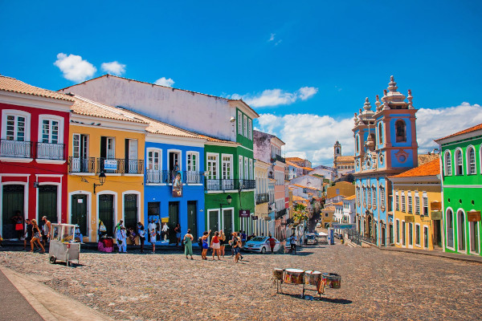
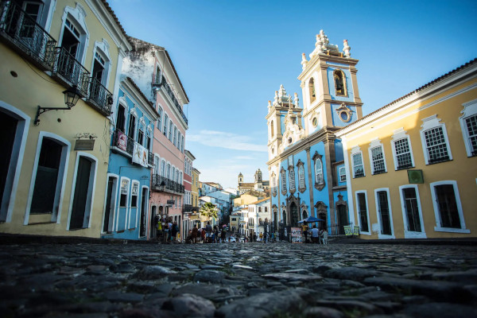
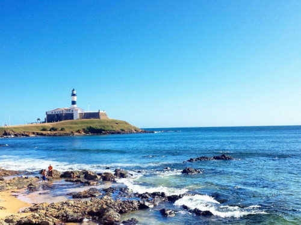
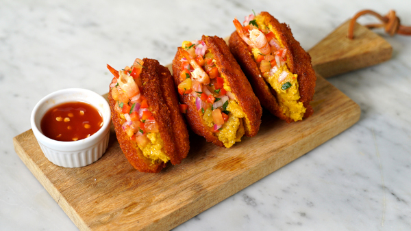
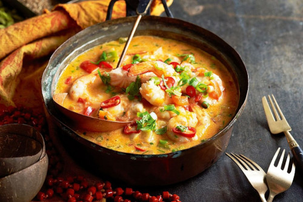

Salvador
Salvador, a capital do estado da Bahia, é uma cidade rica em cultura, história e diversidade. Conhecida por suas praias deslumbrantes, arquitetura colonial e vibrante cena cultural, Salvador é um destino imperdível para quem busca experiências únicas. A cidade é um caldeirão de influências africanas, europeias e indígenas, o que se reflete em sua música, culinária e tradições.

Pelourinho - Salvador
Pelourinho
O Pelourinho é o coração histórico de Salvador e um Patrimônio Mundial da UNESCO. Suas ruas de paralelepípedos, casarões coloridos e igrejas barrocas cativam os visitantes. Você pode explorar museus, lojas de artesanato e desfrutar de apresentações de capoeira. À noite, o Pelourinho ganha vida com apresentações de música ao vivo e dança, tornando-o um local culturalmente vibrante.

Praia do Farol da Barra
A Praia do Farol da Barra é uma das praias mais famosas de Salvador, com o icônico Farol da Barra como pano de fundo. As águas calmas e cristalinas são ideais para nadar, praticar esportes aquáticos e relaxar na areia. Você também encontrará restaurantes e bares à beira-mar, onde pode saborear deliciosos petiscos e coquetéis.

Acarajé
O acarajé é uma iguaria típica da Bahia e é um bolinho frito feito com massa de feijão-fradinho e recheado com vatapá, caruru, camarão e pimenta. É uma explosão de sabores e uma experiência gastronômica que você não pode deixar de experimentar. O acarajé é frequentemente vendido por baianas vestidas com trajes tradicionais em barraquinhas pelas ruas de Salvador.

Moqueca Baiana
A moqueca baiana é um prato de frutos do mar cozidos em um molho de dendê, leite de coco, pimentões, cebolas e temperos. É uma combinação única de sabores e aromas que representa a culinária baiana. A moqueca pode ser preparada com peixe, camarão ou outros frutos do mar e é frequentemente servida com arroz branco e pirão. É uma delícia imperdível da Bahia.
